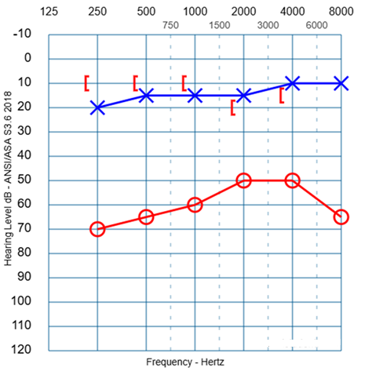
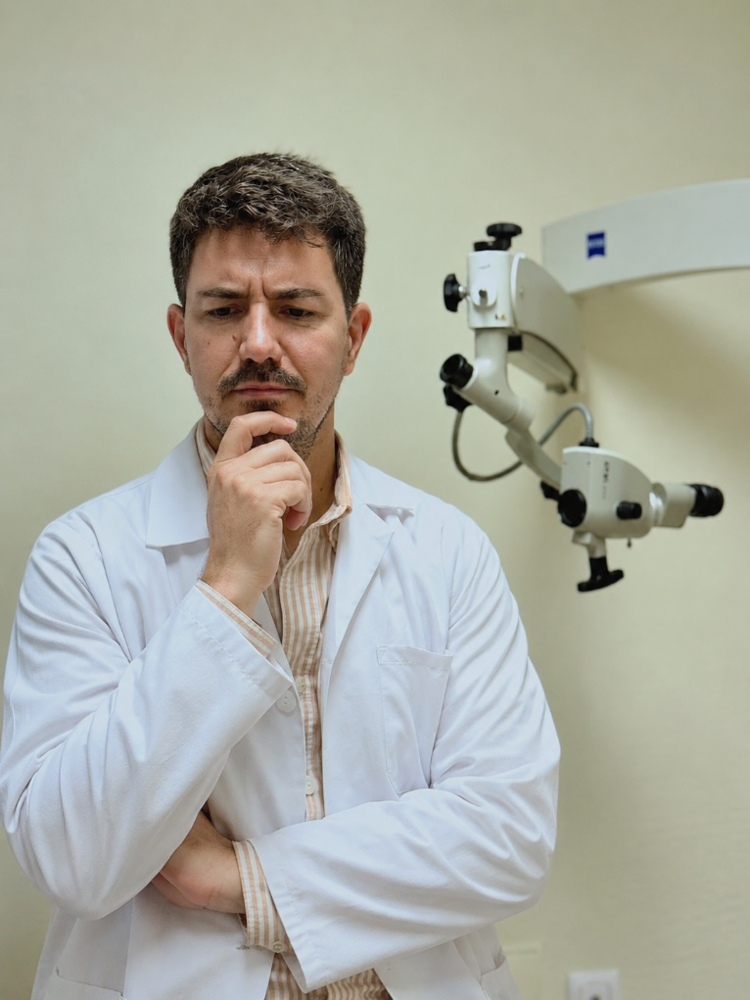
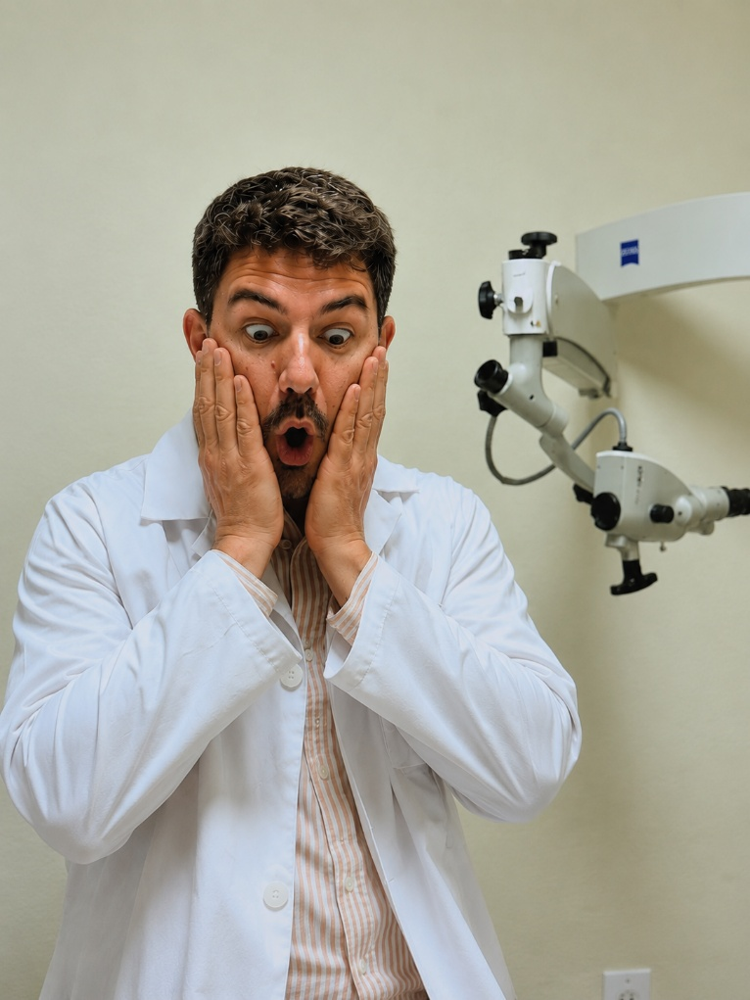
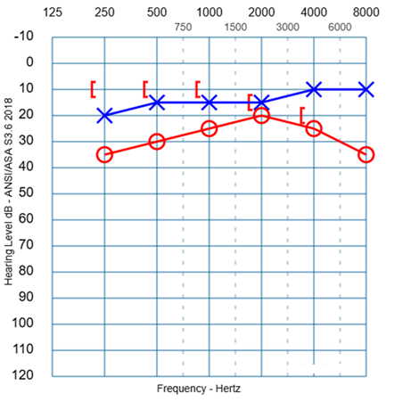
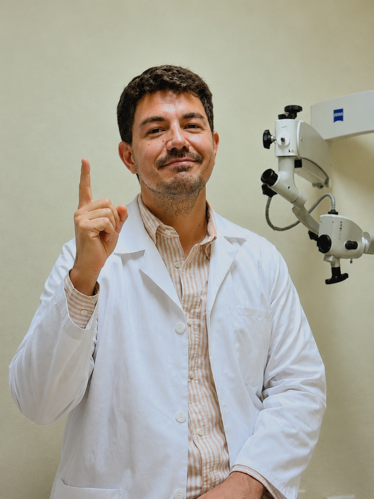

Una cavidad.
Un meato.
Una decisión.
Un caso real de secuelas de colesteatoma. Observa, interpreta y decide. La información aparecerá en el mismo orden en que condicionaría una decisión clínica.
El caso
Se decidió realizar una rehabilitación cavitaria: obliteración con hueso autólogo–areola–colgajo PAA, TORP bypass, timpanoplastia con areola y cartílago pantimpánico supraprotésico, flap de perforantes estándar, facial al ras, PRF y dilatación tubárica.
Tras la intervención, la paciente perdió el seguimiento durante aproximadamente 1,5 años. Cuando vuelve a consulta comienza nuestro caso.
Primera impresión
El vídeo comienza mostrando el oído izquierdo, de aspecto normal, y después pasa al oído derecho, donde se encuentra el problema. Observa especialmente el tamaño y la configuración del meato derecho.
¿Qué impresión inicial te produce esta meatoplastia?
Primera audiometría

Viendo el aspecto del meato y la audiometría, ¿qué esperarías de esta cavidad?
No sabrás todavía si tu respuesta encaja con el caso.
Ahora sí: explora la cavidad
Ya has hecho tu predicción sin conocer su interior. Mira ahora la exploración completa y saca tus propias conclusiones antes de continuar.
¿Y qué dice la paciente?


¿Y si eliminamos la presión sobre el meato?
Repetimos la audiometría, pero utilizando auriculares de inserción. El inserto mantiene el meato abierto y evita el colapso producido por el auricular convencional.

El componente transmisivo prácticamente desaparece.
La comparación sugiere que buena parte de la hipoacusia de transmisión observada inicialmente era consecuencia del colapso mecánico del meato por el auricular convencional, no del comportamiento de la cavidad.
Con esta nueva información, ¿qué pesa más para definir una “buena meatoplastia”?
Selecciona todo lo que consideres relevante.
Con lo que sabes ahora, ¿cambiarías tu valoración inicial de la meatoplastia?
Si esta paciente está asintomática y la cavidad es estable, ¿harías algo?

¿Esta nueva información cambia tu decisión?
Meatoplastia en M
¿Qué mensaje extraerías tras ver este caso?
Puedes seleccionar varios.
El tamaño visible del meato es solo una pieza del problema. En este caso, los auriculares convencionales colapsaban el meato derecho y simulaban un importante componente transmisivo; con auriculares de inserción, ese componente prácticamente desaparecía. La accesibilidad, el comportamiento clínico, la función y las necesidades reales de la paciente terminan definiendo la decisión.